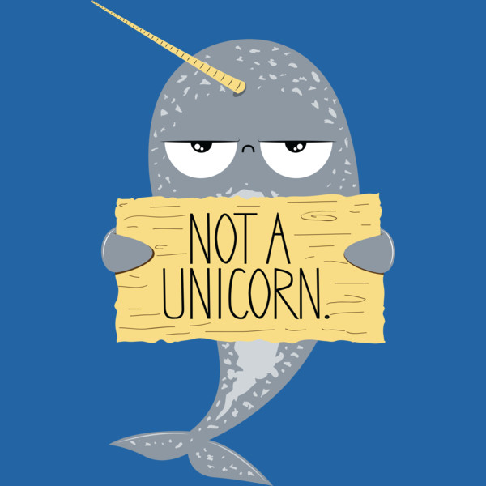
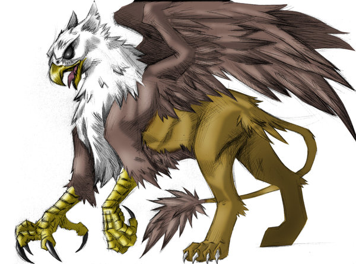

Rare elemental phoenix.
Eleanor is a fiery phoenix that was born from the ashes several months ago. She is easily trainable.
Owners of a phoenix must be surrounded by water.
Pet 4
F.D. Roosevelt

Narwhal, cousin to the unicorn.
In order to properly take care of F.D. Roosevelt, one must live in the north, near the ocean.
Pet 5
Reagan

Ancient Griffin, found wandering Italy.
Reagan, is an old soul who would do best in a home that is quiet and calm.